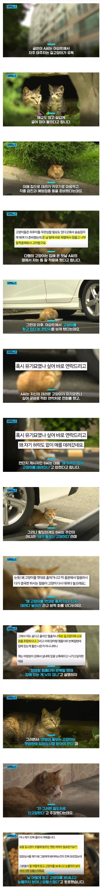

미첬나 진짜 ㅋㅋㅋㅋㅋㅋㅋㅋㅋㅋㅋ

미첬나 진짜 ㅋㅋㅋㅋㅋㅋㅋㅋㅋㅋㅋ
지.금이걸밭드시
ㅋㅋㅋㅋㅋㅋㅋㅋㅋㅋㅋㅋㅋㅋㅋㅋㅋㅋㅋㅋㅋ 정신병자네
진짜 저정도까지가면 정신병 검사에서 뭐 하나는 분명히 나올듯
돌봄비 받아야 한다고~~~
같은 인간이라고는 믿기지가 않는 정신구조네 ㄷㄷ 진심 미친ㄴ들인듯

k 자릿세 ㄷ
이런거에 충격받는 개붕이들은 아직 캣맘을 몰랐던 것
아 그럼 여태까지 저 길고양이로 피해입은거 싹다 추려서 캣맘년한테 청구하면 되겠네
그럼 저승런 할테니 일석이조 아닌가?
예? 저도 돌보고 있던 고양인데요..? 이제까지 밥주고 계셨다고요? 제 심사 없이요?
예 지랄마세요 하고 걍 병먹금해야지 뭘 상대해주냐 법적으로나 도의적으로나 꿀릴 것 없구만
와 시발 진짜 리얼 진짜 정신병이구나....
그지랄맞은 책임비 달라는거네 ㅋㅋㅋㅋㅋㅋㅋㅋㅋㅋㅋㅋㅋㅋㅋㅋ